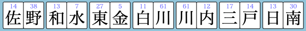

市町村麻雀練習ツール
地歴エンターテイメント（@chirekienter）さん発案の市町村麻雀を、ひとりで遊べるパズルゲームにしました。
市町村を覚えたり、手組みや役作りを練習するのに活用してください。
操作方法
- 「市町村一覧を表示」ONで牌にマウスを乗せる (スマホでは長押し) と、 その牌を含む市町村の一覧が表示されます。
- 牌を河のあたりまでドラッグすると打牌できます。
- 「リーチ」をチェックした状態で牌を捨てるとリーチできます。
テンパイしていなくてもリーチできますが、手牌を入れ替えられなくなるので、テンパイを確認してからリーチしてください。
市町村麻雀とは?
本日、地歴エンターテイメント(株)から新感覚の知的ボードゲーム「市町村麻雀」が発売開始されます。
— 地歴エンターテイメント (@chirekienter) March 31, 2024
136枚の牌の組み合わせで表現できる市町村の数はなんと600以上！
日本全国の市町村名に必要以上に詳しくなれる！
君も役満を上がって盛り上がろう！ pic.twitter.com/KixE9gzwW8
地歴エンターテイメント（@chirekienter）さんのエイプリルフールネタが発端の、専用牌を組み合わせて市町村名を作るゲームです。
手牌すべてを市町村名の形にできればアガリです。

通常の麻雀と異なり、メンツとなる牌の枚数は不定です。「原村(長野県)」「関市(岐阜県)」「津市(三重県)」「坂町(広島県)」「原村(沖縄県)」は、牌1枚だけでメンツを構成できます。
4文字で市町村名を構成する牌 (例: 「富」「士」「吉」「田」)を集めれば「カン」もできます。(※カンをしないと、4文字の市町村はメンツにはなりません。)
牌の上部の数字は、その牌を使っていくつの市町村が作れるかを示しています。
詳しいルール・市町村麻雀で作れる市町村の一覧は、地歴エンターテイメント（@chirekienter）さんのTwitterからご確認ください。
ドラについて
ドラ表示から始まる代表的な市町村がドラになります (ドラ表示牌によっては、ドラがないこともあります)。画面左上に、ドラとなる市町村が表示されます。
本ツールのアプリ (本家との違い)
- ひとり麻雀なので、ポン・チーはできません。
- ロンアガリのチャンスがないので、数字が10以上の牌にくっつけて、2文字の市町村をつくってもアガれます。
- 36枚目の捨て牌を捨てたところで終局です。
更新履歴
2024-10-21 土庄町を離島判定に修正
2024-10-08 役判定を修正 (地一色と断本州の重複・同一市町村の重複を不可に)
2024-10-03 役判定を修正 (二槓子・四離島の飜数を修正、地一色の役判定を追加)
2024-09-30 操作説明を追加
2024-09-23 くっつき待ち制限機能追加
2024-08-26 役判定を修正 (天和を4飜役に)
2024-08-25 役判定を修正 (>5連泊等を役扱いに、清連泊の判定修正)
2024-08-23 β版公開
アプリをインストール
- Chromeで開く
- アドレスバーの をタップ
- ホーム画面に追加 を選択
- Safariで開く
- メニューバーの をタップ
- ホーム画面に追加 を選択